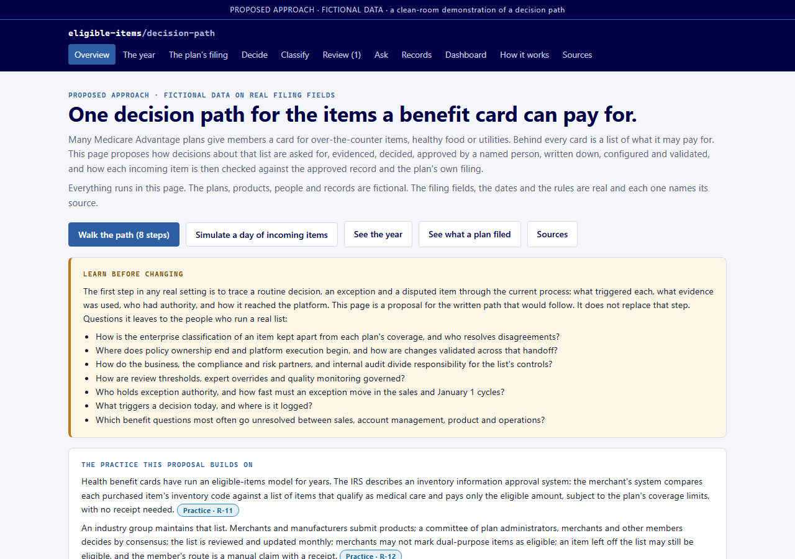
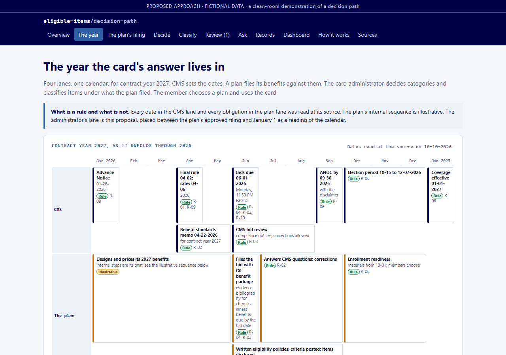
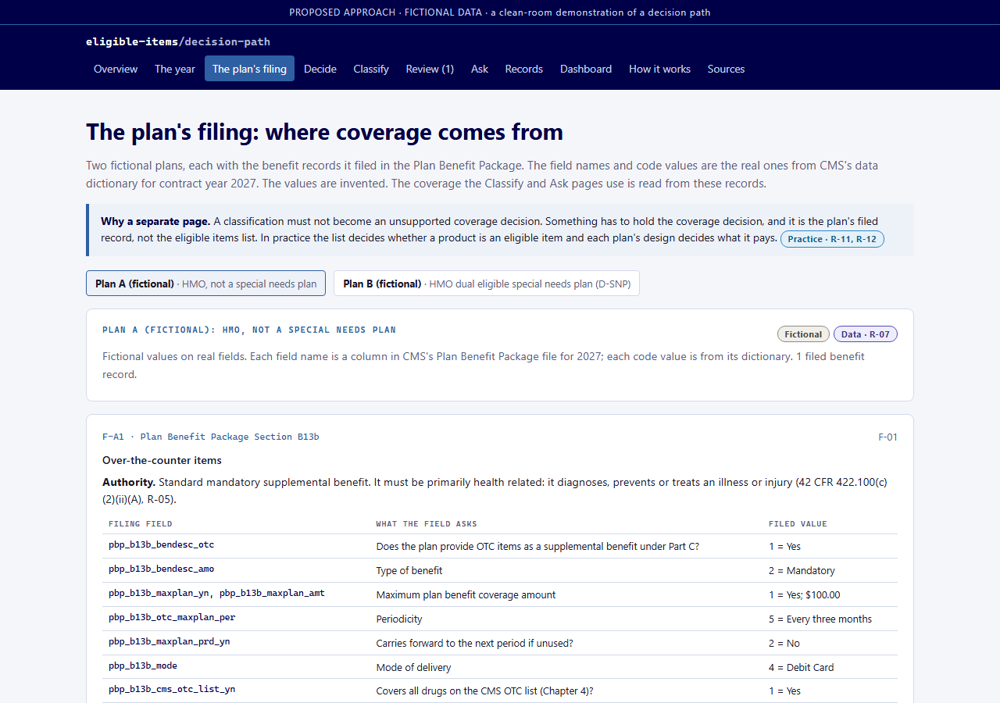
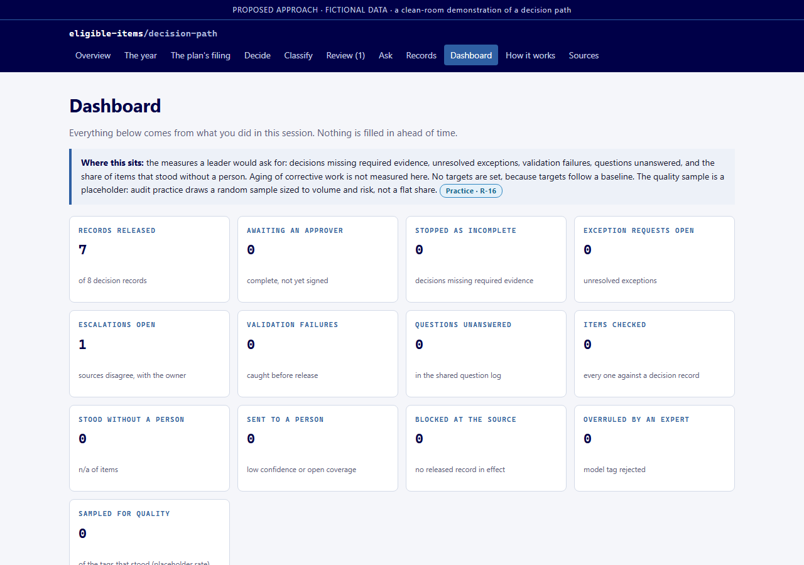

The problem it addresses
A health plan benefit card pays at the register only for items on an eligible items list. That list is where three things meet: the benefit the plan filed with the regulator, the rules the regulator sets for what a card may pay for, and a member's purchase. Keeping the list right is a governance problem before it is a technology problem.
- A category goes on the list only under a benefit the plan actually filed, under the authority that benefit carries, with the evidence written down.
- Someone named signs the decision, with reasons and an effective date, and the record of it is what the card is configured from.
- An item the list has not decided becomes a question with an owner, never a guess at the register.
- Anything that classifies items automatically works inside a threshold a person set, and anything it is unsure of goes to a person.
- All of it sits on the calendar of a contract year, because a plan's benefit is fixed in June, described to members by the end of September, chosen in the autumn, and must work on January 1.
Walk one decision and one item
The same eight steps the demonstration walks a visitor through, as pictures and words. Every screen below is the real page running on fictional data; the names are invented. Use the buttons, the dots, or the arrow keys.
The pages
Eleven pages in one self-contained file. Four of them, as they open.

Overview. The questions to learn before changing anything, the public practice the proposal builds on, and the eight-step walk.

The year. Contract year 2027 in four lanes. The regulator's dates and the plan's obligations are rules with sources; the plan's internal sequence is marked illustrative.

The plan's filing. Two fictional plans on the real Plan Benefit Package fields, with the counts from the public 2027 filing data.

Dashboard. The measures a leader would ask for, the shared question log, the item trail and the audit trail.
How to read the marks
Every check, record, box and source in the demonstration carries one of six marks.
| Mark | Meaning |
|---|---|
| Rule | A regulation or an agency document, read at the source on the date shown. |
| Practice | How a named public body or standard describes the work, from its own published document. |
| Data | A count computed from a public data file. |
| Design choice | A choice this proposal makes where no rule or published practice decides it. |
| Illustrative | A sequence shown for orientation, not asserted as fact. |
| Fictional | Invented for the demonstration. |
What is real and what is simulated
The demonstration is one self-contained HTML file: no backend, no build step, no model, no external dependencies. Everything that decides an outcome is deterministic logic, and the data it runs on is fictional.
| Component | What the demonstration does |
|---|---|
| The rules and dates | Read at their public sources: the regulation, the agency's rule and memoranda, the Internal Revenue Service notice on card substantiation, the industry eligible-product-list operator's published practice, and the standards bodies' own documents. The Sources page says when each was read. |
| The counts | Computed from the agency's public filing data for contract year 2027. |
| The plans and their records | Fictional. The field names, code values and authorities are the real ones from the public filing dictionary; every amount, condition and name is invented. |
| The item tag | A simulated tag with a confidence number chosen by the sample, not a model's output. The checks that act on it are real. |
| Storage | The visitor's own browser. Nothing leaves the page. |
The decision-record discipline follows ai-decision-governance-gate; the named-review and audit-trail pattern follows governance-control-tower. All plan data is fictional. Clean-room demonstration only. This is a proposed approach to a decision path.
Walkthrough by invitation
The runnable demonstration is kept in a private repository and is walked through by invitation. To ask for one, use the contact on the Lab site.